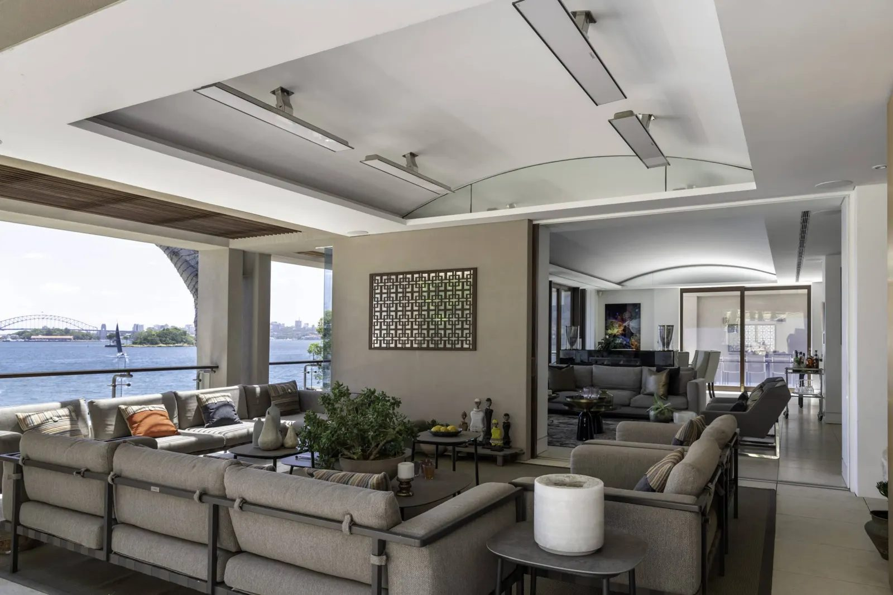
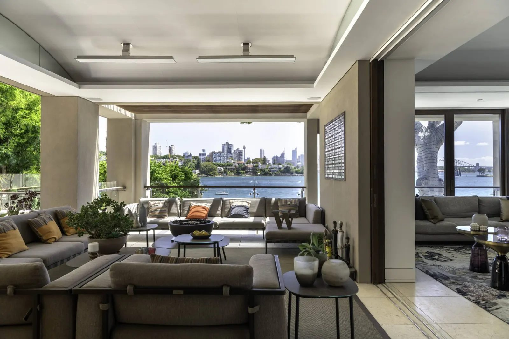
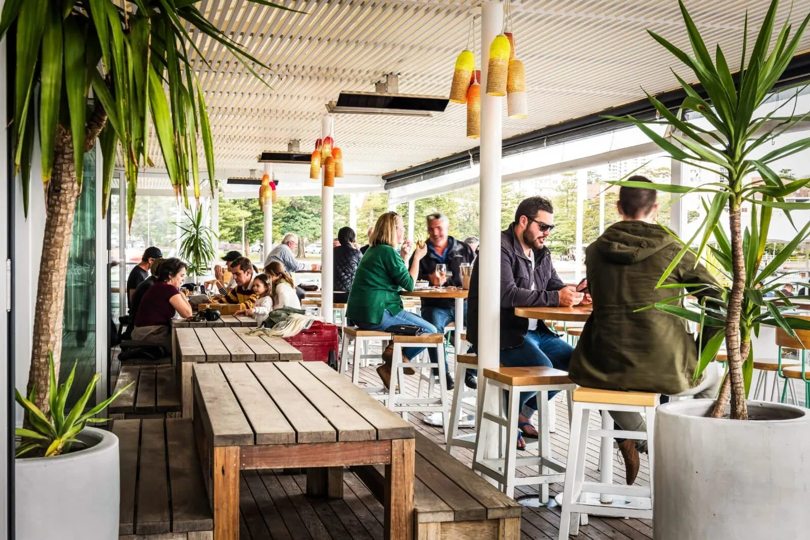
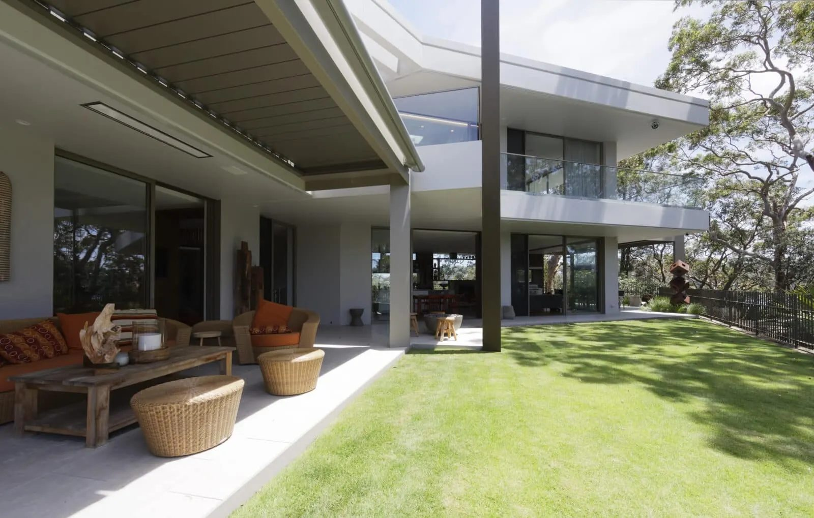
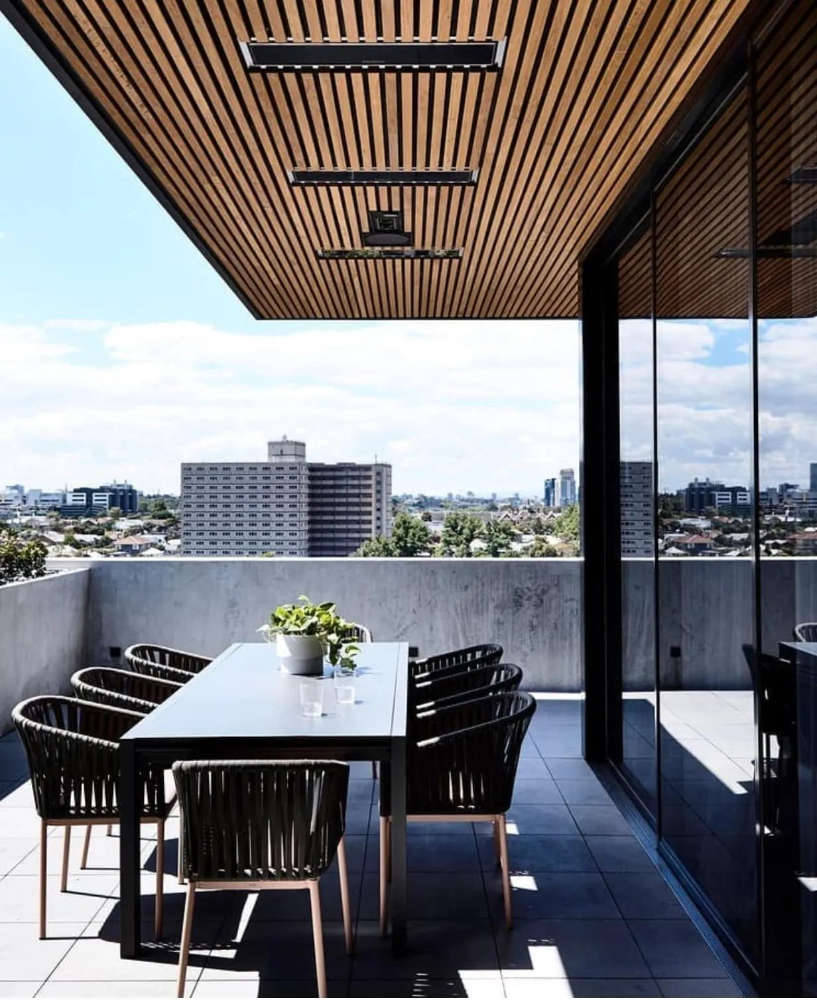

How Australia Lives Outdoors 2027Outdoor Living Statistics · AU
#5
Australians Search For The Outdoor Area
“Outdoor area” was the fifth most-searched home feature on realestate.com.au in 2025. “Balcony” came seventh and “heating” tenth.
Outdoor living and heating in the top ten home searches, 2025
Source: PropTrack, Rising keyword searches reveal emerging home buying trends, January 2026 (realestate.com.au searches, 2025)
01Where Australians BuildHow Australia Lives Outdoors 2027
The Numbers Behind The Australian Alfresco
Every one of these numbers comes back to the same evening: a table set under the pergola, friends who would happily stay another hour, and the chill that settles in after sunset. Together they show how much of Australian life is lived outside.

01
205,249
Dwellings approved across Australia in 2025-26 – a 9.2% increase on the year before. Every one is a new outdoor space to plan, from a backyard alfresco to a balcony.
Source: Australian Bureau of Statistics, Building Approvals, Australia, June 2026 release (financial year 2025-26, original terms)
02
More Apartments, More Balconies
Apartment dwellings approved, by financial year
48,778 apartments approved in 2025-26, up 13.2%.
Source: Australian Bureau of Statistics, Building Approvals, Australia, June 2026 release (financial year 2025-26, original terms)
03
The Outdoor Space Works Harder
645m²
Median land area of a house sold in Australia in 2025. The average newly built house has 241 m² of floor area, so every square metre outside counts.
Source: PropTrack, land and house size analysis, October 2025 (median land area of houses sold; average floor area of a newly built house)
02What Australians SpendHow Australia Lives Outdoors 2027
Australians Invest In The Homes They Have
04
$56.2billion
Australian renovation spending in 2025-26 (A$), up almost 5% in a year. The alfresco that already exists is the next room to finish.
Renovation as a share of all housing spending, 2025-26
Source: KPMG, New builds and renovation spending surge as knock-down rebuilds decline, October 2026 (financial year 2025-26)
05
Courtyards Are On The List
+62%
Growth in searches for “courtyard” in Canberra over the past twelve months, as buyers look for outdoor space that works on a compact block.
Source: PropTrack, Rising keyword searches reveal emerging home buying trends, January 2026 (realestate.com.au searches, 2025)
03The Australian EveningHow Australia Lives Outdoors 2027
Milder Winters, Cold Nights
06
3.2°C
Melbourne’s coldest night of 2026, on 6 July – in the city’s warmest winter on record. Hobart fell to 2.6 °C the same night.
Record-Warm Winters In Three Capitals
Mean winter temperature, 2026, °C (provisional seasonal averages; each a record)
More winter evenings are worth spending outside – once the chill after sunset is handled.
Source: Weatherzone, Melbourne’s coldest night of 2026 as five states fall below zero, 6 July 2026; Weatherzone, Top 3 warmest winter on record for Sydney, Melbourne, Brisbane, Canberra, Adelaide and Hobart, 31 August 2026 (provisional seasonal averages)

04Dining Out, OutdoorsHow Australia Lives Outdoors 2027
07
$66.3bn
Turnover of Australia’s cafés, restaurants and takeaway food services in the financial year to June 2025 (A$66.273 billion), up 2.5% on the year before.
Source: Restaurant & Catering Australia, from ABS Retail Trade data, August 2025 (financial year ending June 2025)

08
Sydney Makes Outdoor Dining Permanent
~1,000outdoor dining applications approved since November 2020
800+businesses supported
13,000 m²of outdoor dining area, about
Participating businesses that saw a 20% increase in turnover
More than one in three. Outdoor dining fees have been waived permanently across the City of Sydney since 1 July 2025.
Source: City of Sydney, Outdoor dining fees permanently waived across Sydney, 1 July 2025 (approvals since November 2020)
05The All-Electric AlfrescoHow Australia Lives Outdoors 2027
Power, Policy And The Outdoor Room
09
New Homes Are Going All-Electric
Gas rules for new buildings in the ACT and Victoria
In the ACT, the regulation covers residential buildings and commercial and community facility zones; existing connections are not affected. In Victoria, the all-electric rule excludes industrial, manufacturing and agricultural buildings.
Source: Premier of Victoria, 24 June 2025; ACT Government, 2023
10
~40%
Australian dwellings with rooftop solar, April 2025.
One square = 1% of dwellings
Source: Australian Energy Council, Twenty-five years of rooftop solar, June 2025 (dwellings, April 2025)
11
454,753
Home batteries installed across Australian households by the end of 2025 – 183,245 in the second half of the year alone, about four times the same period of 2024. Rooftop solar reached 28.3 GW across about 4.3 million installations.
Source: Clean Energy Council, Rooftop Solar and Storage Report, July to December 2025 (February 2026), as reported by pv magazine, February 2026

06Connected ComfortHow Australia Lives Outdoors 2027
The Smart Home Is The Australian Norm
12
86%
Australian households that own at least one smart home product, June 2026 – up 10 percentage points since 2024.
Source: Telsyte, Australian Smart Home Market Study 2025–2029, as reported by iTWire, October 2026 (households, June 2026)

13
Households Budget For It
% of Australian households, 2026
Households with a smart home budget rose from 44% to 71% in two years, and the average budget passed A$3,500 in 2026.
Source: Telsyte, Australian Smart Home Market Study 2025–2029, as reported by iTWire, October 2026 (households, June 2026)
07The Year At A GlanceHow Australia Lives Outdoors 2027
Every Number, With Its Source
#
Statistic
Figure
Source
Year
01
Rank of “outdoor area” among home searches
#5“heating” #10
PropTrack
2025
02
Rank of “balcony” among home searches
#7
PropTrack
2025
03
Growth in “courtyard” searches, Canberra
+62%past 12 months
PropTrack
2025
04
Dwellings approved
205,249up 9.2%
ABS Building Approvals
2025-26
05
Apartment dwellings approved
48,778up 13.2%
ABS Building Approvals
2025-26
06
Median land area, houses sold
645 m²
PropTrack
2025
07
Average floor area, newly built house
241 m²
PropTrack
2025
08
Renovation spending
A$56.2 billionup almost 5%; 37% of housing spend
KPMG
2025-26
09
Mean winter temperature, Sydney · Melbourne · Canberra
15.29 · 12.18 · 8.14 °Ceach a record (provisional)
Weatherzone
Winter 2026
10
Melbourne’s coldest night
3.2 °C6 July
Weatherzone
2026
11
Café, restaurant and takeaway turnover
A$66.273 billionup 2.5%
R&CA, from ABS data
FY to June 2025
12
City of Sydney outdoor dining approvals
~1,000800+ businesses
City of Sydney
Since Nov 2020
13
Participating businesses with a 20% rise in turnover
More than 1 in 3
City of Sydney
2025
14
Dwellings with rooftop solar
~40%
Australian Energy Council
April 2025
15
Home batteries installed
454,753183,245 in H2 2025
Clean Energy Council
End 2025
16
Households owning a smart home product
86%71% have a budget
Telsyte
June 2026
What These Numbers Tell Us
Australians search for outdoor space and build it on compact blocks and balconies.
Renovation spending is close to its peak: the existing alfresco is the next room.
Winters are milder, yet the nights still fall cold – and outdoor dining is here to stay.
New homes are going all-electric, so outdoor heat, power and controls belong in the first drawing.
08Questions And SourcesHow Australia Lives Outdoors 2027
Q1
What do Australian home buyers search for most?
“Swimming pool” led realestate.com.au searches in 2025. “Outdoor area” came fifth, “balcony” seventh and “heating” tenth, according to PropTrack.
Q2
How big is a typical Australian block?
The median land area of a house sold in 2025 was 645 m², and the average newly built house has 241 m² of floor area, according to PropTrack.
Q3
How much do Australians spend on renovation?
A$56.2 billion in 2025-26, up almost 5% and 37% of all housing spending, according to KPMG.
Q4
Do Australian winter nights get cold?
Yes. Even in its warmest winter on record, Melbourne fell to 3.2 °C on 6 July 2026, according to Weatherzone.
Q5
Can new homes in Victoria have gas?
From 1 January 2027 all new homes and most new commercial buildings in Victoria must be built all-electric, according to the Victorian Government.
Q6
Where do these numbers come from?
Each figure comes from a named public source: PropTrack, the ABS, KPMG, Weatherzone, R&CA, the City of Sydney, the Victorian and ACT governments, the AEC, the CEC and Telsyte.
PropTrack, Australia’s block sizes are shrinking and so are buyer expectations, 2025. proptrack.com.au/insights-hub/australias-block-sizes-are-shrinking-and-so-are-buyer-expectations
Australian Bureau of Statistics, Dwelling approvals rise in June 2026 (Building Approvals, Australia), 2026. abs.gov.au/media-centre/media-releases/dwelling-approvals-rise-june-2026
KPMG Australia, New builds and renovation spending surge as knock-down rebuilds decline, 2026. kpmg.com/au/en/media/media-releases/2026/10/new-builds-and-renovation-spending-surge-as-knock-down-rebuilds-decline.html
Weatherzone, Top 3 warmest winter on record for Sydney, Melbourne, Brisbane, Canberra, Adelaide and Hobart, 2026. weatherzone.com/au/news/top-3-warmest-winter-on-record-for-sydney-melbourne-brisbane-canberra-adelaide-and-hobart/1891534
Weatherzone (via Elders Weather), Melbourne’s coldest night of 2026 as five states fall below zero, 2026. eldersweather.com.au/news/melbournes-coldest-night-of-2026-as-five-states-fall-below-zero/1891443
Restaurant & Catering Australia, Australians Still Dining Out: What the Latest ABS Data Tells Us About Hospitality Spend, 2025. rca.asn.au/homepage-news-gallery/australians-still-dining-out-what-the-latest-abs-data-tells-us-about-hospitality-spend
City of Sydney, Outdoor dining fees permanently waived across Sydney, 2025. cityofsydney.nsw.gov.au/media-releases/2025/outdoor-dining-fees-permanently-waived-across-sydney
Premier of Victoria, Securing Victoria’s gas supply while slashing energy bills, 2025. premier.vic.gov.au/securing-victorias-gas-supply-while-slashing-energy-bills
ACT Government, Regulation to prevent new gas connections starts in December, 2023. cmtedd.act.gov.au/open_government/inform/act_government_media_releases/rattenbury/2023/regulation-to-prevent-new-gas-connections-starts-in-december
Australian Energy Council, Twenty-five years of rooftop solar: who were the pioneers?, 2025. energycouncil.com.au/analysis/twenty-five-years-of-rooftop-solar-who-were-the-pioneers
Clean Energy Council, Rooftop solar and storage report, July to December 2025, 2026. cleanenergycouncil.org.au/news-resources/rooftop-solar-and-storage-report-july-to-dec-2025
pv magazine, Australia’s rooftop solar hits 28.3 GW as home battery uptake surges, 2026. pv-magazine.com/2026/02/04/australias-rooftop-solar-hits-28-3-gw-as-home-battery-uptake-surges
iTWire (Telsyte Australian Smart Home Market Study 2025–2029), Batteries push Australia’s smart home market past $11 billion as AI waits for the keys, 2026. itwire.com/your-it-news/home-it/batteries-push-australias-smart-home-market-past-11-billion-as-ai-waits-for-the-keys
The Full Picture
See What These Numbers Mean For Your Next Outdoor Space
Download Outdoor Living Trends 2027 · Australiabromic.com.au